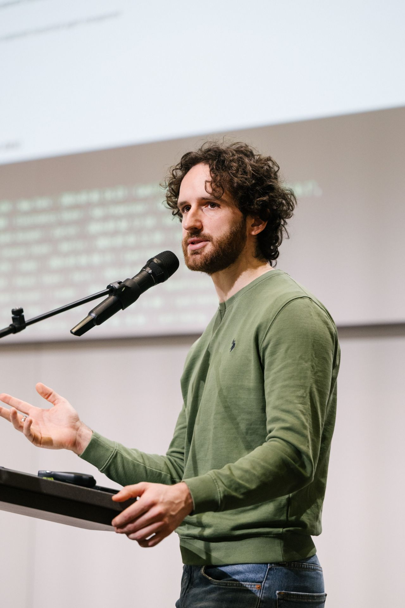
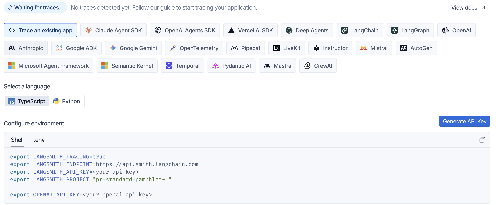
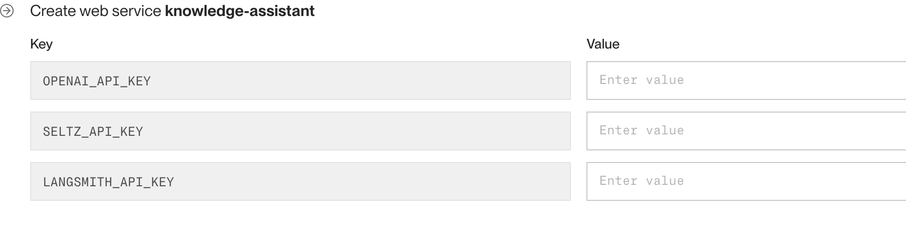

PyCon DE 2025
HELLO 👋
Alessandro Romano
Your instructor for the day.
CO-HOST
My Data Guest — on Substack
Interviews with top AI & data experts, deep dives, and courses.
Follow along mydataguest.substack.com →Six ground rules. They all point the same way: spend your attention on thinking, not typing.
Team up when it gets heavy
If the workload piles up or your brain is fried, pair with your neighbour. Two people, one screen, twice the ideas.
…or fly solo
Working alone is completely fine. Pick the mode that keeps you learning — and switch whenever you like.
Share ideas out loud
Say the half-formed thought. Questions and tangents are the best part — someone else is stuck on the same thing.
Nothing to catch up on
All materials are shared and yours to keep. Everything runs offline, at your own pace, long after today.
Design, don't type
The skill we're building is problem solving and agent design. Generate code only when it's genuinely the bottleneck.
Have fun — it's not a test
No grades, no leaderboard. Broken output is data; the interesting stuff happens when things misbehave.
🌟 If you only remember one thing
You are not here to finish the notebooks — you're here to leave able to design an agent from scratch. Fall behind on purpose if a question is more interesting than the next cell.
🔓 Yes — the solutions are already in the repo
Every assignment ships with its _SOLUTION notebook. Nobody is stopping you from opening them — and I'm not going to pretend otherwise. But the learning is in the attempt, not the answer.
Try it yourself
Write something — even if you're sure it's wrong
Sit in the stuck
Two minutes of confusion is where it actually clicks
Then watch me
I walk through the solution live and explain the why
Read the solution
Compare it to yours — now it means something
💚 This material is yours forever
The repo doesn't expire and it doesn't get taken away. So don't spend today racing to copy — you can read every solution line-by-line tonight, next month, or next year. Spend today on the part you can't do alone: asking me questions.
Nine modules, one build, three phases. Each block is concept → hands-on notebook, and every hands-on plugs into the same growing application.
🎯 One thing to take home
Agentic AI isn't a bigger prompt — it's a control loop. Once you can reason about state, tools, and routing, the rest (RAG, MCP, multi-agent, deployment) is just wiring you already understand.
An AI Knowledge Assistant for company operations.
Ask it a question about the company; it decides where to look — internal docs, Slack, GitHub — retrieves what's relevant, and synthesises a grounded answer.
When it makes sense, it also acts: draft a Slack message, open a GitHub issue, suggest a next step. By the end of the day it runs live on the internet.
🧩 It comes together piece by piece
No throwaway toy examples. Every module adds a real component to this app — you leave with the whole thing, deployed and yours.
Every module follows the same rhythm. I explain the idea on a few slides, then we open a notebook and run it together. The slides are the map; the notebooks are the territory.
Concept
Short slides — the mental model & the "why"
Hands-on
Open the notebook, run it, read the output
Plug in
Fold what we built into the assistant
Q & A
Breathe, ask, break — then next module
📓 Look for the teal slide
Each section closes on a Hands-on slide that names the exact notebook(s) to open and what to watch for. That's your cue to open the notebook. Everything is in the shared repo — run it locally in Jupyter (uv run jupyter lab); Colab works as a fallback.
Clone this first
github.com/pigna90/langgraph-workshop
WHAT YOU NEED
WHERE WE'LL WORK
⚠️ Two minutes now saves twenty later
Put your keys in a .env file today and load them with python-dotenv. Never hard-code a key in a notebook cell — it will end up in git.
The same task can be solved three ways. They differ in who decides what happens next — your code, or the model.
Hard-coded logic
You write every branch. if/else, pipelines, rules.
A single model call
prompt → response. The model reasons once, you use the output.
A decision loop
The model chooses actions, observes results, and repeats until done.
The dial isn't "how smart" — it's how much control you hand to the model. More autonomy = more capability and more risk.
In reality these blur into a continuum of autonomy. Each rung hands a little more control to the model — and trades predictability for flexibility.
📏 Rules
Hard-coded if/else & pipelines
💬 Single LLM call
One prompt → one response
🔧 LLM + tools
One call that can act, once
🔁 ReAct agent
Loop: reason · act · observe
🕸️ Multi-agent
Several agents coordinating
🧭 Where we'll live today
Most of the workshop sits in the middle-right: an LLM with tools, wrapped in a ReAct loop, orchestrated by LangGraph. We touch multi-agent at the end — only once a single agent stops being enough.
💬 A colleague asks: "Who owns the billing service, and can you ping them about the failing deploy?"
Works only if someone hard-coded this exact question → lookup. Any rewording breaks it.
✕ Too rigid for open questions
Understands the request & writes a lovely reply — but doesn't know your org and can't ping anyone. May invent an owner.
⚠ Fluent, but no facts & no actions
Searches internal docs → finds the owner → drafts a Slack ping → confirms. Grounded, and it acts.
✓ Decides the path, uses tools
✅ Why this one needs an agent
The steps aren't known in advance — which tool, in what order, depends on what the docs say. That's the exact signature of a job for an agent, and it's our assistant's bread and butter.
✅ REACH FOR AN AGENT WHEN
🛑 AN AGENT IS OVERKILL WHEN
💡 The rule of thumb
Use the least autonomy that solves the problem. Start deterministic, add an LLM call where language matters, and only reach for a full agent when the path itself must be decided at runtime.
This isn't hypothetical — agentic systems are in production today. The pattern is always the same: dynamic path + real tools + a goal to reach.
🏥 Medical triage
Read the intake notes, check symptoms against protocol, route or escalate to a clinician.
🛡️ Compliance & investigations
Pull the records, cross-check policy, assemble an evidence trail a human signs off.
✅ QA automation
Read the spec, generate cases, run them, triage the failures — loop until green.
🛒 E-commerce & campaigns
Segment the audience, draft the message, pick the channel, act on what converts.
🔎 Research & discovery
Search literature, cross-check sources, synthesise a cited report — from ops to drug discovery.
🧭 Knowledge assistants
Our build — answer over docs, Slack & GitHub, then act.
🎯 Notice the shared shape
Every one of these retrieves information, reasons over it, and takes actions across multiple steps. Same skeleton, different tools and data — which is why the assistant we build today is a template for the one you need at work.
In an application, an LLM is a pure function: text in, text out. Powerful — but on its own it hits three hard walls.
prompt
LLM
response
🧠 No memory
Each call is stateless. It forgets everything the moment it replies.
🖐️ No actions
It can describe an API call, but it cannot make one. Just text.
🔁 No control flow
One shot only. It can't decide to try again, or take a different step.
Point our future assistant at three real company-ops questions with nothing but a prompt. Each one fails in a different, revealing way.
ASK
"How many PTO days do I get?"
🧠 Hallucinates
Invents "25 days" confidently — it has never seen your HR policy.
ASK
"Ping the billing owner on Slack."
🖐️ Can't act
Writes a lovely message — but has no way to actually send it.
ASK
"And who did I just mention?"
🔁 Forgets
Blank stare — the previous turn is already gone.
🎯 The gaps map to the fixes
Hallucinates → give it knowledge (RAG). Can't act → give it tools. Forgets → give it state. The rest of the workshop is literally closing these three walls, one at a time.
An agent is many LLM calls in a loop — so a sloppy prompt fails many times over. A few patterns do most of the work:
🧾 Structured outputs
Ask for JSON against a Pydantic schema, not prose. Now the output is parseable — the backbone of tools & routing.
🎯 Few-shot examples
Show 2–3 worked examples. The model imitates format and tone far more reliably than from instructions alone.
🧩 Templates & roles
Separate system (rules, persona) from user (the task). Reusable, testable, easier to reason about.
🧠 Reasoning prompts
Chain-of-thought & step-by-step for hard tasks — the seed of the ReAct "Thought" we'll formalise next.
💡 DID YOU KNOW · one agent, several models
Nothing says every call must hit the same model. Production agents route by job: a small fast model for classifying, extracting and routing; a strong one for the final synthesis; a multimodal one when the input is a scan, chart or screenshot. Same graph — you just bind a different model per node. Often the cheapest latency and cost win available.
Structured output is the one to internalise — it's what lets code trust the model's answer.
This is how we break the "can't act" wall — and it's just structured output with a job. You hand the model some functions; it replies with a request to call one. It never runs code itself.
⚠️ The model never executes anything
It only chooses a tool and fills in the arguments — safe by design. You stay in control of what actually runs. That single request → run → feed-back is one turn of the agent loop.
That's the whole idea. An agent is an LLM placed inside a decision-making loop, with tools to act and state to remember.
🔁 The agent loop, informally
think → pick a tool → act → observe the result → repeat …
→ stop when the answer is ready.
This loop is the heart of everything we build today. Next: the most common way to structure it — ReAct.
from langchain.agents import create_agent @tool def web_search(query: str) -> str: """Search the web for current info.""" return search_client.run(query) agent = create_agent(llm, tools=[web_search]) agent.invoke({"messages": [("user", "...")]})
LangGraph ships the whole loop prebuilt. We use it today — then rebuild it by hand in Module 4 to see inside.
WHAT THOSE 5 LINES DO
🎓 Why start with the easy button?
See a working agent first, so the concepts land against something real. Understanding (Module 3) and rebuilding (Module 4) come next.
Talking to the Model
Module_2_Demo_Talking_to_the_Model.ipynbPlain call & streaming → hit the 3 walls → structured outputs (Pydantic) → a @tool the model requests.
Your First Agent
Module_2_Demo_Your_First_Agent.ipynbcreate_agent + a web-search tool answers a question end-to-end — a working agent in ~5 lines.
WATCH FOR
Both are teaching demos. The real app build starts in Module 4.
ReAct interleaves reasoning and acting. The model narrates a thought, takes one action, reads the result — then decides whether to loop again or answer.
🧭 Why interleave, not plan-then-do?
Because each observation changes what the next step should be. Reasoning between actions lets the agent adapt to what it just learned — instead of committing to a plan that reality breaks.
# the loop, stripped to its essence while not done: thought = llm(prompt(history)) if thought.is_final: return thought.answer # the model chose a tool + args result = tools[thought.tool](**thought.args) history.append(thought, result) # observe
LangGraph will give us this loop with state, retries and routing handled properly — but this is all it is underneath.
⚠️ FAILURE MODES TO WATCH
ReAct from Scratch
Module_3_Demo_ReAct_From_Scratch.ipynbBuild the agent loop in a raw Python while — two tools so the model must choose — then watch it break and add the guards.
No framework here — we hand-build the loop Module 2 hid, so it's never a black box again.
WATCH FOR
A chain runs A → B → C, once, forwards. Agents need to branch, loop and retry — that's a graph, not a line.
| Need | Linear chain | Graph (LangGraph) |
|---|---|---|
| Branching | Fixed path only | ✓ Conditional edges route on state |
| Loops | No way back | ✓ Edges can point backwards |
| Retries | Fails the whole run | ✓ Route to a retry / fallback node |
| Inspecting state | Hidden between steps | ✓ One explicit, shared state object |
✅ The mental model
Think of your agent as a state machine: nodes do work, edges decide where to go next, and a single shared state travels through it. The ReAct loop becomes a graph you can see.
The shared memory
A typed dict passed to every node. Nodes read it and return updates — this is how steps remember each other.
The units of work
Plain Python functions. state in → state update out. Call the LLM, run a tool, transform data.
The wiring
Connect nodes. Normal edges always fire; conditional edges pick the next node based on the state.
🔀 Conditional edges = the agent's decisions
"Did the model ask for a tool? → go to the tools node. Otherwise → finish." That single branch, evaluated each loop, is what makes the graph agentic rather than a fixed pipeline.
class State(TypedDict): messages: Annotated[list, add_messages] def call_model(state: State): return {"messages": [llm_with_tools.invoke(state["messages"])]} graph = StateGraph(State) graph.add_node("agent", call_model) graph.add_node("tools", ToolNode(tools)) graph.add_edge(START, "agent") graph.add_conditional_edges("agent", should_continue) graph.add_edge("tools", "agent") # loop back app = graph.compile()
READ IT AS A LOOP
That's the ReAct loop from Section 3 — now explicit, inspectable, and safe to extend.
A back-edge makes the graph loop — but a loop must be able to stop, and steps can fail. All three are the same tool you already have: a conditional edge.
🔁 Loop
An edge that points backwards (tools → agent). The agent iterates until its work is done.
🔂 Retry
On failure, route back to the node — or to a fallback. A retry is just another branch.
🛑 Terminate
A stop-condition edge to END — plus recursion_limit as a backstop.
⚠️ Always have a way to stop
Your stop condition is how the agent should finish; recursion_limit catches it when it doesn't — hit the limit and LangGraph raises GraphRecursionError instead of looping (and billing) forever. This is Module 3's max_steps, now built in.
Once the loop is a graph, you can express richer control flow than a single agent-tools cycle:
🗺️ Plan → execute
A planner node breaks a goal into steps; downstream nodes carry them out. Structure, not one big prompt.
⚡ Fan-out with Send()
Map work across N parallel branches, then reduce — e.g. answer 5 sub-questions at once, compile one report.
👁️ Visualise & stream
Draw the graph to see the flow; stream node-by-node so users watch the agent think.
🧩 Same primitives, bigger structures
Planning, parallelism and streaming are all just nodes and edges. You don't learn new concepts — you compose the three you already have.
LangGraph Basics
Module_4_Demo_LangGraph_Basics.ipynbTiny examples: state + nodes + edges, a conditional branch, and add_messages.
Knowledge Assistant v1 — you build it
Module_4_Project_Knowledge_Assistant_v1.ipynbAssemble the real agent as a StateGraph. Key functions are TODO — you implement them.
…v1 — Solution
Module_4_Project_Knowledge_Assistant_v1_SOLUTION.ipynbThe full implementation — for reference if you get stuck.
WATCH FOR
This is v1 of the app we grow & deploy — the same loop from Module 3, now a real graph.
🧱 The skeleton is in place
This agent ⇄ tools loop over shared state is the whole app's backbone. Every later module just adds tools and knowledge to this — the graph doesn't change.
You describe a function — name, arguments, what it does — and the model decides when to call it and with what arguments. The model never runs code; your runtime does, then hands back the result.
✅ RELIABLE TOOLS ARE
🛑 TOOLS GO WRONG WHEN
⚠️ The description is a prompt
The model chooses tools from their names and docstrings alone. Write them like instructions to a new teammate — ambiguity there becomes tool misuse at runtime.
from langchain_core.tools import tool # @tool turns a typed, documented # function into a callable the LLM sees @tool def search_github_issues(repo: str, query: str) -> str: """Search open issues in a GitHub repo (repo is 'owner/name').""" return gh.search(repo, query) # your API call
WHAT THE MODEL RECEIVES
FOR OUR ASSISTANT
# 1 · a schema pins down the arguments class RefundArgs(BaseModel): order_id: str amount: float = Field(gt=0) # must be > 0 reason: Literal["damaged", "late"] @tool(args_schema=RefundArgs) def issue_refund(order_id, amount, reason) -> str: """Issue a refund for an order.""" try: return billing.refund(order_id, amount, reason) except Exception as e: return f"error: {e}" # readable, not a crash
✅ The rule
A tool that can't crash and can't be mis-called is what keeps the agent loop alive. The model reads your error text and recovers.
When you connect a tool, prefer one designed for an AI to consume. Web search is the clearest case: a human search engine and an LLM search API return very different things.
🧑 Built for humans
🤖 Built for LLMs SELTZ
✅ Why it matters for an agent
The model can only reason over what a tool hands back. Seltz treats the AI as the primary consumer — clean, ranked web context instead of human-facing snippets — so the agent spends tokens thinking, not de-cluttering HTML. That's why our assistant's web_search wraps Seltz.
A tool is just a Python function — so anything with an API becomes a tool. You wrap the call, write a clear docstring, and handle errors. That's the whole move.
🔎 Read the world
Wrap a web-search API (Seltz) in a @tool — the assistant can fetch current, external facts.
✍️ Act on the world
Draft a Slack message, open a GitHub issue. The assistant stops answering and starts doing.
🧪 Draft, don't send
Action tools return the payload for review first. Safe by default — a human approves before anything real happens.
⚠️ Actions need a safety valve
A tool that sends or deletes is irreversible. Start with dry-run (return the draft), add a confirmation step, and only then wire the real send. Guard the risky steps.
Designing Reliable Tools
Module_5_Demo_Designing_Reliable_Tools.ipynbArgs schemas, validation, defensive try/except, structured output.
Knowledge Assistant v2 — you build it
Module_5_Project_Knowledge_Assistant_v2.ipynbWrap Seltz search + draft Slack / GitHub tools. Key functions are TODO.
…v2 — Solution
Module_5_Project_Knowledge_Assistant_v2_SOLUTION.ipynbThe full implementation, for reference.
WATCH FOR
Adding tools didn't touch the graph — same v1 loop, richer hands.
The model can't know your internal docs. So we retrieve the relevant pieces at query time and inject them into the prompt — the model answers from real, cited context.
Index
Chunk docs, Slack, code → embeddings in a vector store
Retrieve
Embed the query, fetch the most similar chunks
Inject
Add retrieved text to the prompt as grounding
Answer
Model responds from context, with sources
✅ The one-liner
RAG changes what the model knows — without retraining it. Retrieval is just a tool: the agent can decide when to reach for internal knowledge vs. web search vs. answering directly.
Document loaders
PDFs, Office docs, HTML, code. Each source becomes clean Documents with metadata you can filter on.
Splitters & chunkers
Too big = noise; too small = lost meaning. Chunk size & overlap are the dials that make or break retrieval.
Vector database
Embed chunks and store in ChromaDB. Add, update, delete, persist — retrieval by semantic similarity.
⚠️ Retrieval quality is decided before the LLM
If chunking is bad, the model never sees the right context — and no prompt can fix that. Most RAG failures are retrieval failures, upstream of generation.
💡 DID YOU KNOW · beyond plain vector search
Vectors are the 80% case, not the ceiling. Two cheap upgrades when retrieval plateaus: hybrid search (keyword + vector — for IDs, codes and exact names) and reranking (retrieve 50, let a cross-encoder keep the best 5). And when a question spans related facts rather than similar text, a graph beats both — that's the next slide.
KAG — Knowledge-Augmented Generation — retrieves from a knowledge graph instead of a pile of chunks. Same goal (ground the model in your data), different question it can answer:
Stores text chunks as embeddings
Retrieves by similarity: "give me the 5 passages that look most like this question."
Wins when the answer sits in a passage — policies, docs, tickets, papers.
Stores entities & relationships
Retrieves by traversal: walk the edges from one entity to the next.
Wins when the answer is a path — no single passage contains it.
🔗 The question that breaks plain RAG — a multi-hop join
"Which suppliers are connected to this flagged invoice?" No chunk holds that answer — it's three facts in three documents:
Invoice 412 —issued_by→ Supplier X —shares_director_with→ Supplier Y —also_billed→ Case 99
Similarity returns invoices that read like yours. A graph follows the link — and shows the exact path it took, which is what makes the answer auditable.
⚖️ THE HONEST TRADE-OFF · and why we use vectors today
A graph costs you an extraction step (an LLM pulling entities & relations out of text — imperfectly), a schema decision, and a store like Neo4j. Start with vectors; add a graph when questions are truly relational. Mature systems run both. Note: KAG isn't a standardised term — also sold as GraphRAG.
RAG Pipeline
Module_6_Demo_RAG_Pipeline.ipynbChunk → embed (Chroma) → retrieve → grounded answer with sources.
Knowledge Assistant v3 — you build it
Module_6_Project_Knowledge_Assistant_v3.ipynbWrap retrieval as a @tool → the agent routes internal docs vs. web. TODOs to fill.
…v3 — Solution
Module_6_Project_Knowledge_Assistant_v3_SOLUTION.ipynbFull implementation, for reference.
WATCH FOR
The prompt the model actually sees is assembled from many parts. Designing that assembly — what to include, in what order, and what to leave out — is context engineering.
⚠️ More context ≠ better
A stuffed window adds cost, latency and noise — the model loses the signal. Curate ruthlessly: include what's relevant, drop the rest.
🧭 The goal
Give the model exactly what it needs to answer well — no more. Context is a budget, not a bucket.
Our assistant still forgets between turns (the third wall from Module 2). Memory is just context you persist — and LangGraph makes the short-term kind almost free.
Within a conversation
Compile with a checkpointer and pass a thread_id — LangGraph saves & reloads the history per thread.
app = builder.compile(checkpointer=InMemorySaver()) app.invoke(msg, {"configurable": {"thread_id": "user-1"}})
Across sessions & users
Durable facts written to a store — preferences, past chats — recalled in future sessions. Makes the assistant adaptive. (Beyond today's build.)
🧵 Same thread remembers, new thread is fresh
A thread_id is one conversation. Same id → the assistant recalls earlier turns; a new id → a clean session. That's exactly how the Streamlit chat (Module 8) will keep each user's conversation going.
The Model Context Protocol is a common interface between agents and external systems. Instead of hand-wiring every integration, an agent speaks one protocol to many MCP servers.
Your agent
MCP client
✅ Use existing servers
Plug into ready-made MCP servers — no bespoke glue for every API.
🔧 Or expose your own
Wrap a simple internal API as an MCP server → modular, reusable, scalable architectures.
MCP Servers
Module_6_Demo_MCP_Servers.ipynbExpose your own MCP server with FastMCP, connect to it with langchain-mcp-adapters, then hand its tools to an agent.
A tiny local stdio server — no hosting, no network. To the agent, MCP tools are just tools.
WATCH FOR
When one agent juggles too many tools and goals, it gets confused. Splitting responsibilities gives each agent a narrow prompt, few tools, one job — easier to steer and debug. Common patterns:
🧭 Planner / Executor
One agent breaks the goal into steps; another carries each out.
🔎 Retriever / Analyzer
One gathers the evidence; another reasons over it to answer.
✍️ Generator / Reviewer
One drafts; another critiques and approves before it ships.
In LangGraph each agent is a subgraph — a node that is itself a graph. Coordination is just more edges.
Once you have multiple agents, how do they hand off control? Two common shapes:
| Aspect | 🧭 Supervisor | 🐝 Swarm |
|---|---|---|
| Control | Centralised — a router agent delegates | Decentralised — agents hand off peer-to-peer |
| Routing | Supervisor decides who acts next | Each agent decides when to pass control |
| Best for | Clear task decomposition, auditability | Fluid, exploratory collaboration |
| Watch out | Supervisor is a bottleneck | Harder to trace & contain |
🧭 How to choose
Start with a supervisor — it's easier to reason about and debug. Reach for a swarm only when hand-offs are genuinely dynamic and a central router gets in the way.
HOW THEY TALK
⚖️ Complexity vs clarity
More agents = more moving parts, more latency, more ways to fail. Only split when a single agent genuinely can't hold the job.
✅ Start simple
One good agent beats a tangle of mediocre ones. Grow into multi-agent when the task demands it — not before.
Multi-Agent · Supervisor
Module_7_Demo_Multi_Agent_Supervisor.ipynbA supervisor routes to two specialists — a researcher (web) and a docs expert (internal) — who report back until the task is done.
Standalone demo — our assistant stays a single agent. Swarm (peer-to-peer hand-off) is covered on the previous slide.
WATCH FOR
import streamlit as st from assistant import build_assistant # our v3.1 graph # build once; one thread_id per session = memory if "agent" not in st.session_state: st.session_state.agent = build_assistant() st.session_state.tid = str(uuid.uuid4()) for role, text in st.session_state.history: st.chat_message(role).write(text) if prompt := st.chat_input("Ask…"): st.chat_message("user").write(prompt) cfg = {"configurable": {"thread_id": st.session_state.tid}} ans = st.session_state.agent.invoke({"messages":[("user",prompt)]}, cfg) st.chat_message("assistant").write(ans["messages"][-1].content)
THE ESSENTIALS
The graph is imported, not rebuilt — same code the deploy step (Module 9) ships.
An agent can take seconds and use several tools. A blank spinner feels broken. A few small touches make it feel trustworthy — and they're the outline's "display structured outputs & tool results."
⏳ Stream, don't stall
.stream() the graph and render as it goes, so the user sees progress instead of a frozen screen.
🔧 Show what it did
Surface the tools used and sources cited — "used: search_company_docs". Turns a black box into something you trust.
📋 Render structure
Structured tool output? Show it as a table / card, not a JSON blob. Match the display to the data.
✅ The principle
An agent is non-deterministic and slow-ish — so make its work visible. Progress, tools, and sources on screen are what separate a demo from something people actually rely on.
assistant.py — the graph
src/app/assistant.pyYou write this. Fill the TODOs — it's the v3 graph (tools + RAG + memory) moved out of the notebook into reusable code.
app.py — the chat UI
uv run streamlit run app/app.pyAlready written. Don't touch it — it just imports build_assistant() from your file and renders the chat.
We leave Jupyter — this runs on localhost, the same files Module 9 deploys.
WATCH FOR
✅ Your goal
When the app answers a question, you assembled the whole day correctly. Reference in app/solution/.
A normal app is deterministic — same input, same path, and a stack trace when it breaks. An agent is neither: it decides its own steps, calls tools, and can fail silently — a wrong tool, a bad answer, a runaway loop. You can't fix what you can't see.
🕶️ Without monitoring
🔦 With monitoring (tracing)
🧭 The mental model
Monitoring an agent = recording every run so you can replay it. The terminal trace we added is the mini version; LangSmith is the same idea, in a dashboard, for production. It's how you go from "it feels off" to "here's the exact step that broke."
An agent is a black box until you can see inside it. LangSmith records every run — prompts, tool calls, tokens, latency, errors — so you can debug and watch it in production.
The best part: zero code changes. Set four env vars and every run is traced automatically:
LANGSMITH_TRACING=true LANGSMITH_API_KEY=lsv2_pt_... LANGSMITH_PROJECT=knowledge-assistant LANGSMITH_ENDPOINT=https://api.smith.langchain.com
WHAT YOU GET IN THE DASHBOARD
✅ Start here
Tracing is the cheapest, highest-value observability. Evaluation (scoring on a dataset, LLM-as-a-judge) is the natural next step once you're tracing.
Let's do it together: create a project on smith.langchain.com, generate an API key, and paste four lines into .env. Then chat with the assistant and watch the trace appear.
✅ Zero code changes
We don't touch assistant.py. The env vars alone auto-instrument every LangGraph run.

Note the language tab: it lands on TypeScript. Click Python, then use the .env tab instead of Shell.
Deployment is mostly discipline, not magic. Pin what you depend on, keep secrets out of code, push, and test the running app.
Package
A committed uv.lock + a render.yaml blueprint
Connect repo
Render reads render.yaml & provisions the service
Set secrets
API keys as env vars in the dashboard
Push = deploy
Every git push auto-redeploys · live URL
✅ Same uv workflow as your laptop
The server runs uv sync --frozen against the committed uv.lock — the exact versions you tested. Nothing new to learn, no second deps file to drift.
⚠️ What bites on the free tier
Cold starts (~30-60s to wake), ephemeral disk (re-embeds once per deploy), and the classic missing env var.
We never click "create a service." We commit a render.yaml that declares what should exist — and let the platform make reality match the file.
✅ Same idea as your code
Your agent's behaviour lives in .py files. Its server now lives in a .yaml file. Both versioned, both reviewed.
RENDER, READING OUR BLUEPRINT

We typed none of the left column. Render read it from the file.
🔎 Everything except the secrets
The service name, runtime, plan and every key came from render.yaml at the repo root. The empty boxes are exactly our sync: false values — the one thing a file in git must never hold.
Nothing to write — the blueprint is already in the repo. We point Render at it and paste our keys.
✅ It's the same app
Identical files to Module 8 — no rewrite for "production." Every git push redeploys.
THE WHOLE DEPLOY CONFIG
# render.yaml (repo root) services: - type: web name: knowledge-assistant runtime: python plan: free rootDir: src buildCommand: pip install uv && uv sync --frozen startCommand: uv run streamlit run app/solution/app.py ... healthCheckPath: /_stcore/health envVars: - key: OPENAI_API_KEY sync: false # ← set in the dashboard - key: LANGSMITH_API_KEY sync: false
⚠️ First hit is slow
Free tier cold-starts (~30–60 s) and re-embeds Chroma once per deploy. Don't panic on stage.
1 · Turn on LangSmith tracing
4 env vars in .env → chat → open the dashboardSee a full trace of one request: agent → tools → answer, with tokens & latency.
2 · Deploy via Render blueprint
render.yaml · uv.lock → connect repoConnect the repo, set secrets in the dashboard, get a live shareable URL.
Same files from Module 8 — now traced and on the internet.
WATCH FOR
🔁 An agent, not a prompt
A ReAct loop with state, tools and routing — built on LangGraph.
🧩 Grounded & connected
RAG + MCP wire it to real docs, Slack and GitHub.
🚀 Deployed & observable
A Streamlit app, live on Render, traced with LangSmith.
🧠 Judgement
When to use an agent — and when a plain call is smarter.
🛠️ Reliable tools
Narrow, typed, well-described — the model's dependable hands.
⚖️ Scale sensibly
Multi-agent when it earns its complexity — not by default.
🎯 The meta-lesson
Agentic AI is engineering, not alchemy. A loop over state, tools, and routing — grounded in real data and shipped like any other app. You now have the whole stack.
You built one assistant — but the skeleton is the same for all of them. To retarget it you swap four things, and keep the loop:
| Your use case | Knowledge source | Tools it needs | Shape |
|---|---|---|---|
| 🏥 Medical triage | Protocols, patient history | Symptom lookup, scheduling | Single agent + human approval |
| 🛡️ Compliance / investigations | Case files, policy, audit logs | Record search, evidence writer | Retriever → analyser → reviewer |
| ✅ QA automation | Specs, past defects | Test runner, log parser | ReAct loop, retry on fail |
| 🛒 E-commerce / campaigns | Catalogue, segments, past sends | Query audience, draft, send | Planner → executor, gated send |
| 🔎 Research & discovery | Papers, internal datasets | Search, fetch, cite | Fan-out sub-questions → synthesise |
✅ Start narrower than feels satisfying
Pick one question your agent must answer well, wire the two tools it truly needs, and put a human in the loop wherever an action is expensive or irreversible. Widen only once it's reliable — that order is what separates the demos from the systems.
One day buys you the build. These four are what stand between a working agent and one you'd put in front of patients, auditors or customers — worth knowing they exist:
📏 Evaluation
"It looked fine" isn't a test. Build a dataset of real questions with expected answers, then score changes against it — LLM-as-judge for quality, exact checks for facts. LangSmith does this; today we only traced.
🛡️ Guardrails & access control
Who is asking, what may they see, what must never leave? PII redaction, per-user permissions on retrieval, and human approval before irreversible actions — non-negotiable in health, finance and legal.
💸 Cost & latency
Every loop is tokens. Cap the iterations, cache what repeats, route cheap work to a small model, and stream so it feels fast. Measure before optimising — the trace tells you where it goes.
🎛️ Fine-tuning
Almost always the last resort, not the first. Prompting, tools and retrieval fix most problems; fine-tune only for a consistent behaviour, format or tone a prompt can't buy — it can't teach facts. RAG changes what it knows, fine-tuning changes how it acts.
💡 DID YOU KNOW · the order matters more than the techniques
Reach for them in this order: get it working → measure it → make it safe → make it cheap → and only then consider fine-tuning. Teams that invert this spend months tuning a model to fix what a better tool description would have solved in an afternoon.
THANK YOU
You went from 0 to a deployed
agentic system — today.
Now go build something that reaches beyond the prompt.
Alessandro Romano · Questions?